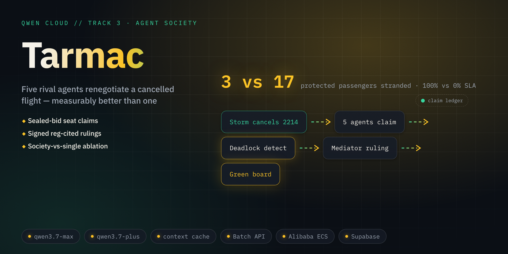
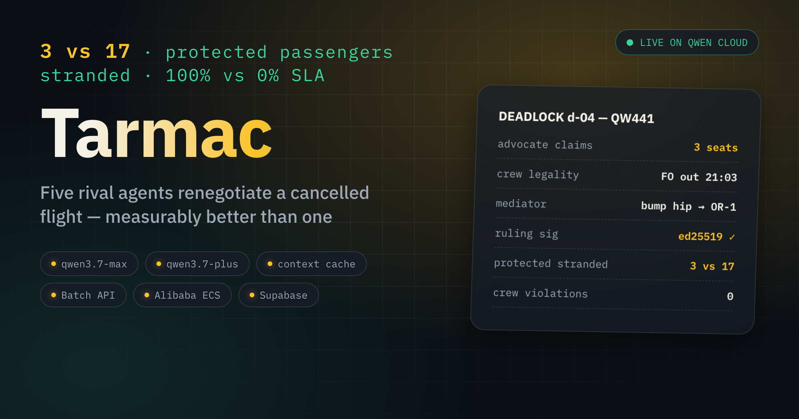

Five agents fight over nine seats — so the right people fly.
TRACK 3 · AGENT SOCIETY · tarmac.edycu.dev
02 // The one number
medical courier · unaccompanied minor · wheelchair · tight connections — medians of 10 seeds, docs/BENCH.md
03 // The problem
A 12-year-old flying alone watches the DEPARTED board go red at 6 PM. Behind a door, one overloaded human decides whether she or the transplant cooler gets that seat.
Greedy re-accommodation optimizes revenue, not regulation: it seats the flexible high-fare passenger — and schedules a crew ferry that breaks the duty clock.
04 // The solution
Five agents with opposed objectives — Rebooking, Crew-Legality, Gate/Ground, Hotel, Passenger-Advocate — negotiate revocable claims on a row-locked seat ledger, sealed-bid in contested rounds.
A Duty-Manager mediator resolves mechanically detected deadlocks with Ed25519-signed, regulation-cited rulings.

05 // How it works
06 // The judge path — offline, zero keys, ~5s
07 // Protocol, not vibes
SEALED-BID COMMIT → REVEAL
Every contested round: commit SHA256(claim ‖ nonce) first, reveal second. A reveal that doesn't re-derive its digest is rejected (I4).
Rivals can't adapt bids — negotiation that's provably leak-free.
MECHANICAL DEADLOCK
Wait-for cycle or contested ≥2 rounds → mediation triggers. Reproducible, never vibes-based.
SIGNED RULINGS
Ed25519 + a cited regulation — verify what was decided, and on what basis, without trusting the DB.
CREDIBILITY CURRENCY
Contesting costs points; winning refunds + premium; losing burns. Argument is economically bounded.
DOMAIN-AGNOSTIC CORE
tarmac-society lib — meeting-room booking on the same protocol in 20 lines.
08 // Why now · why Qwen Cloud
Track 3 asks for a measurable efficiency gain over single-agent baselines. Measuring means running a 5-agent, ~60-turn society dozens of times. That's an economics problem — and Qwen Cloud is the economics.
The transport is swappable (FakeQwen ↔ LiveQwen); ledger physics, sealed bids, signing and logging are identical offline and live.
| qwen3.7-plus × 5 | persona-stable role agents, cheap enough to benchmark |
| qwen3.7-max + thinking | adjudicates 5 conflicting position papers, with citations |
| structured output | Claims/Rulings execute mechanically; malformed = rejected |
| function calling | typed ledger mutations — "I take 14C" gets physics |
| context cache | 4k-token storm prefix reused every turn — ~10× cheaper |
| Batch API | the 60-run ablation at −50% |
| text-embedding-v4 | regulation retrieval so rulings cite sources |
09 // Shipped — solo, in one day
327
tests, all green in ~5s — ledger locks, commit/reveal, deadlock graphs, ruling flow, invariants I1–I5
99%
coverage — pytest --cov=tarmac_society
19
deterministic tests on the live DashScope wire path — --live adds tokens, not code
DELIVERED IN THE REPO
HONEST LIMITS
A simulator — synthetic data, one curated storm + seeded generator. Offline default = deterministic policy agents; real Qwen agents behind --live. ECS deploy documented, not claimed.
10 // The ask
Score Tarmac on Track 3's own sentence: a measured gain over a single-agent baseline — 3 vs 17, reproducible on your laptop.
Edy Cu · github.com/edycutjong/tarmac · tarmac.edycu.dev

tarmac.edycu.dev/pitch/
The mediator is load-bearing.
Now you can prove it.